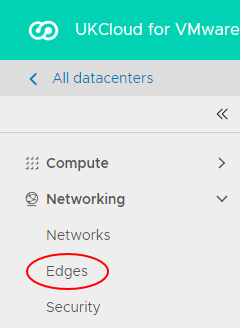
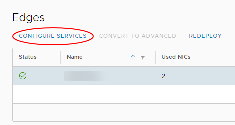
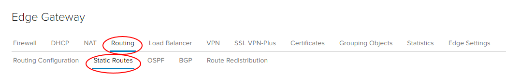

How to create a static route
Overview
Static routing allows you to configure your edge gateway with knowledge of other networks which are not directly connected to it. It's particularly useful if you need to route between virtual data centres (VDCs) in the same vOrg, or route traffic to vApp networks. Static routing is the only option on edge gateways; dynamic routing protocols cannot be used.
As an example, you may have a vApp network 192.168.8.0/24 routed to a VDC network called Front end network. You could create a static route to enable traffic to get to the outside IP of the vApp edge at 192.168.4.33 (a NAT will exist there).
Important
Selecting the Default gateway is not set in the Applied On list under the Static Routing Default Gateway section will remove all existing static routes. However, setting a global default Gateway IP when it is configured with Default gateway is not set will retain the entries on the Static Routes tab.
Creating a static route
To create a static route:
In the vCloud Director Virtual Datacenters dashboard, select the VDC that contains the edge gateway in which you to create the static route.
In the left navigation panel, click Edges.

Select the edge that you want to configure and click Configure Services.

Select the Routing tab then the Static Routes tab.

Click the + button.

In the Add Static Route dialog box, fill in the details of the network range, next hop (edge IP) and select the network interface to which you want to apply the static route.

When you're done, click Keep then Save changes.
Repeat the steps for the second VDC.
Next steps
In this article you've learned how to create a static route. For other edge gateway configuration tasks, see:
Feedback
If you find an issue with this article, click Improve this Doc to suggest a change. If you have an idea for how we could improve any of our services, visit the Ideas section of the UKCloud Community.